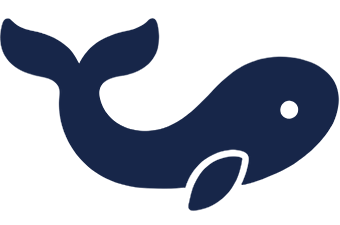

Zwei Spiele, gebaut ohne Engine
Ein System, das Fremde täglich benutzen
Das XRAI Order System ist kein Übungsprojekt. Gäste im Gasthof Nüßleshof scannen den QR-Code am Tisch und bestellen; in der Küche läuft die Bestellung auf. Von den ersten Gesprächen bis zu Deployment und DNS habe ich es allein umgesetzt.
Erst das Dokument, dann der Code
Bei Wavebreaker stand ein Design-Dokument über sechzehn Kapitel, bevor eine Zeile Code existierte: Mechaniken, Klassen, Kurven und wie sie sich gegenseitig beeinflussen.
692 automatische Prüfungen
Wavebreaker prüft sich nach jeder Änderung selbst: 692 kleine Testläufe rechnen nach, ob Schaden, Kosten und Wellen noch stimmen. Alle 692 laufen grün durch.
Ein Projekt anklicken, dann wird es ausführlich
{{ detail.name }}
{{ detail.lead }}
{{ detail.buildTitle }}
{{ b }}
Wie ich hier gelandet bin
miwale, ausgeschrieben
In Systemen denken
Bevor ich baue, schreibe ich auf, wie die Teile zusammenhängen. Wenn ich später eine Kurve ändere, will ich vorher wissen, was das mit den anderen macht.
Danach iterativ: Grundidee, Struktur, ein System, Balancing, das nächste. Entscheidungen bleiben stehen, bis es einen Grund gibt, sie zu kippen.
Womit ich arbeite
Claude Code und Codex
Was bei mir bleibt
Tempo ist das Argument
Das XRAI Order System ist in weniger als zwanzig Arbeitsstunden entstanden — von den ersten Gesprächen mit den Nutzern bis zum laufenden Betrieb. So komme ich als Einzelperson auf Ergebnisse, für die es sonst ein kleines Team braucht.
Noch keine Einträge
Ich schreibe hier nichts hin, nur damit die Seite voll ist.
